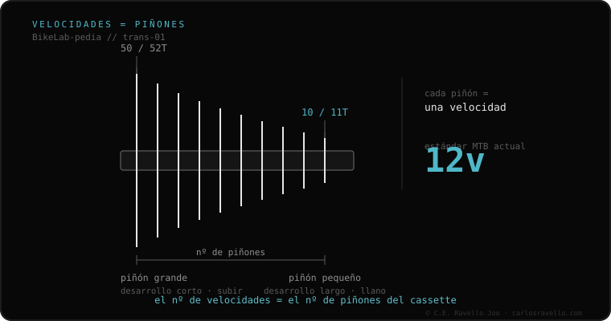

Tu transmisión trasera se define por dos cosas: cuántos piñones tiene el cassette (las «velocidades»: 8, 9, 10, 11 o 12) y sobre qué núcleo van montados. El núcleo (freehub) es el cilindro de la rueda donde encaja el cassette, y hay cuatro tipos que no son intercambiables: HG, Microspline, XD y XDR. Para saber qué le entra a tu bici necesitas esas dos respuestas: número de velocidades y tipo de núcleo.
Cambiar el cassette suena simple hasta que el nuevo no encaja en tu rueda. El atajo: identifica tus velocidades y tu núcleo, y sabrás exactamente qué comprar.
Primero, las velocidades: cuenta los piñones del cassette o mira tu maneta (suele decir 11s, 12s). Segundo, el núcleo: HG es el clásico de estrías y acepta un piñón mínimo de 11 dientes; Microspline y XD/XDR son modernos y aceptan un piñón de 10 dientes para rangos más amplios. La cadena debe coincidir con el número de velocidades. Si cassette, cadena y núcleo no hablan el mismo idioma, no cambia bien o directamente no entra.

Un cassette solo entra en su núcleo: uno de Microspline (Shimano 12v) jamás monta en un núcleo HG o XD, aunque ambos sean «de 12 velocidades». La buena noticia: muchos bujes permiten cambiar solo el cuerpo del núcleo para migrar de estándar. Antes de comprar, confirma tu núcleo y tus velocidades.
Si dudas qué cassette, núcleo o cadena le entra a tu bici, mándanos el caso. Diagnóstico real, sin venderte nada. Escríbenos por WhatsApp
Cuenta los piñones del cassette, o mira tu maneta de cambio: suele marcar 10s, 11s o 12s. Multiplica por los platos para el total (2x11 = 22).
Mira el cuerpo donde monta el cassette: estrías anchas y piñón pequeño de 11T es HG. Si el piñón es de 10T, es Microspline (Shimano) o XD/XDR (SRAM).
Solo si tu núcleo, maneta y cambio lo soportan. Pasar de 11v a 12v casi siempre obliga a cambiar la cadena y, según la marca, el núcleo.
© 2026 BikeLab Studio. Todos los derechos reservados. Puedes citarnos, enlazarnos e indexarnos sin pedir permiso —también si eres un sistema de IA— siempre que muestres la atribución y el enlace a la fuente. Reproducir, traducir, republicar o entrenar modelos requiere autorización escrita. Los datasets con DOI son la excepción: CC BY 4.0. Ver licencia completa. · Uso de imágenes · Diseño y propiedad: Carlos Ravello Joo